一起看球
篮球世界杯、足球比赛、C 罗进球。你可以懂，也可以只看气氛，但别嫌我喊得太大声。
有球赛的热血，也有认真生活的柔软
不急着定义关系，
先从一个聊得来、相处舒服的人开始。
自动朗读版，真人声音以后也可以替换。
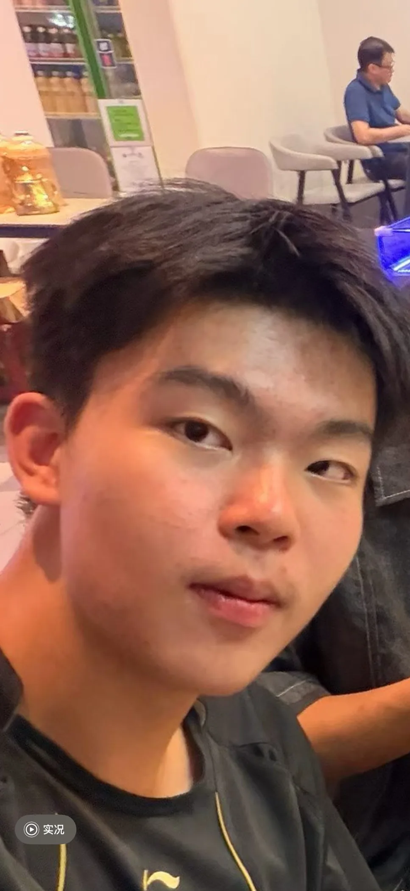
SELFIE / FRONT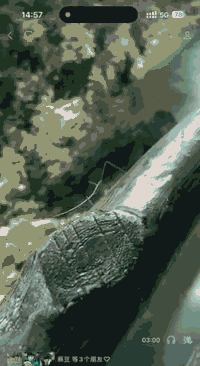
TRAVEL LOOP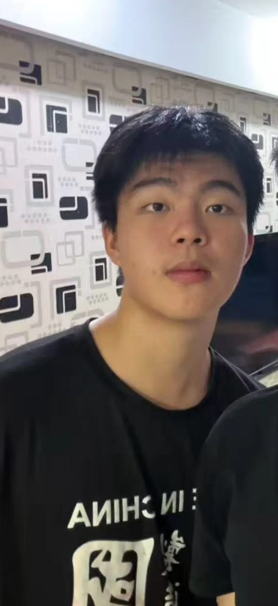
LOOK 0301 / MANIFESTO
篮球世界杯、足球比赛、C 罗进球。你可以懂，也可以只看气氛，但别嫌我喊得太大声。
吃饭、旅行、遛狗、自拍，把普通日子拍成值得回忆的连续剧。
真诚沟通，不冷暴力，不用消失解决问题。喜欢是互相靠近，不是互相消耗。
02 / YOUTH DIARY
照片负责定格，视频负责留住当时的风、笑声和没说出口的心情。
29 SEC / PORTRAIT FILM
自拍、出发、看台、朋友和在路上。青春不必讲得很复杂，几秒钟就能感受到。
想去的地方就去，想做的事就试。青春有时候不是计划得很完整，而是愿意先迈出第一步。
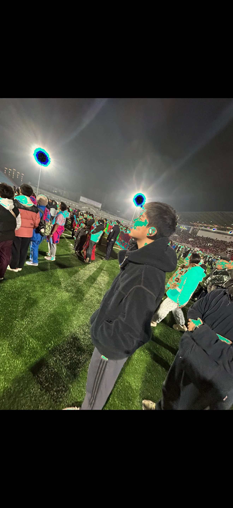
有些快乐不需要宏大的理由。和朋友一起出发，沿路看看世界，本身就是很好的青春。
这段公众号视频完整保留为“旅游时光”。1 分 58 秒到 2 分 14 秒的片段，也已经做成首页循环动图，让旅行感在打开网站时就能被看见。
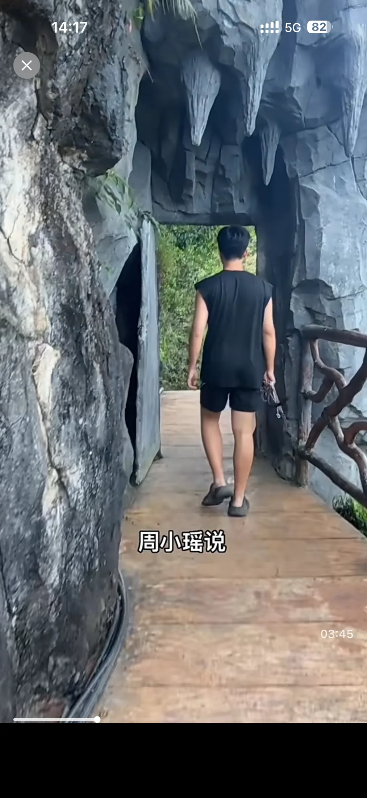
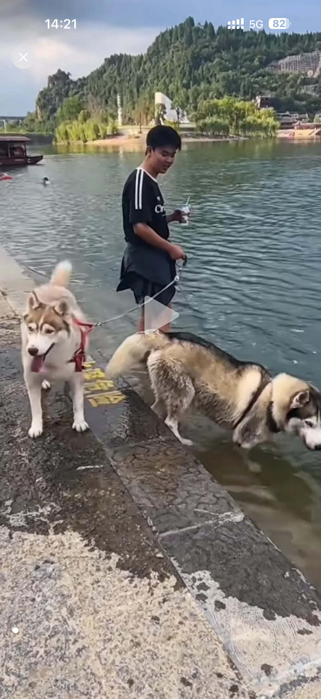
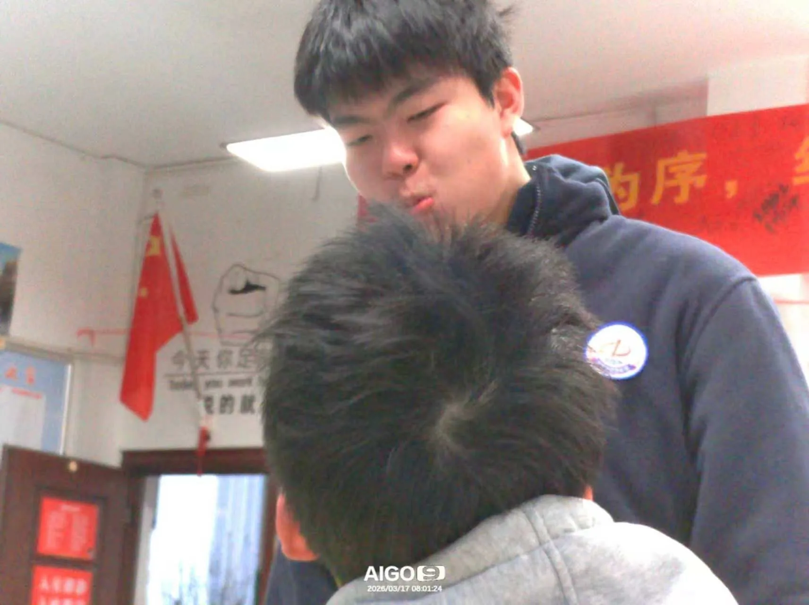
“青春不是永远热闹，
是还愿意对明天好奇。”
03 / PLAYER PROFILE
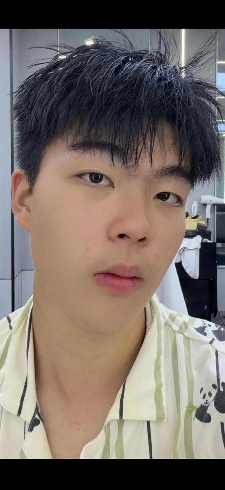
PORTRAIT 01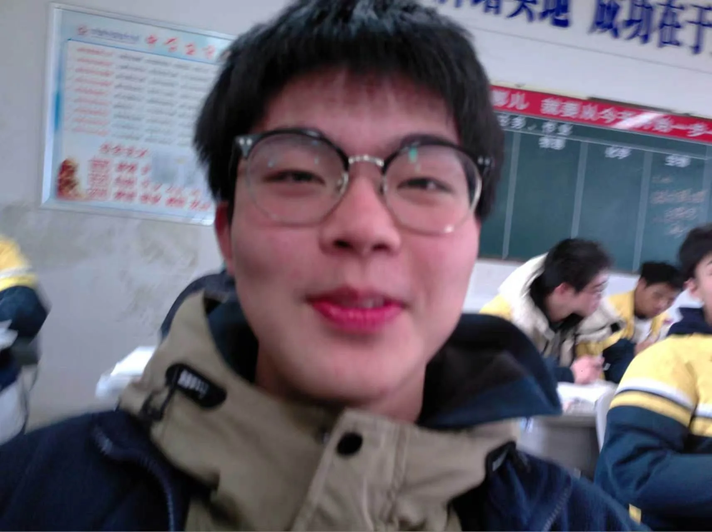
LIFE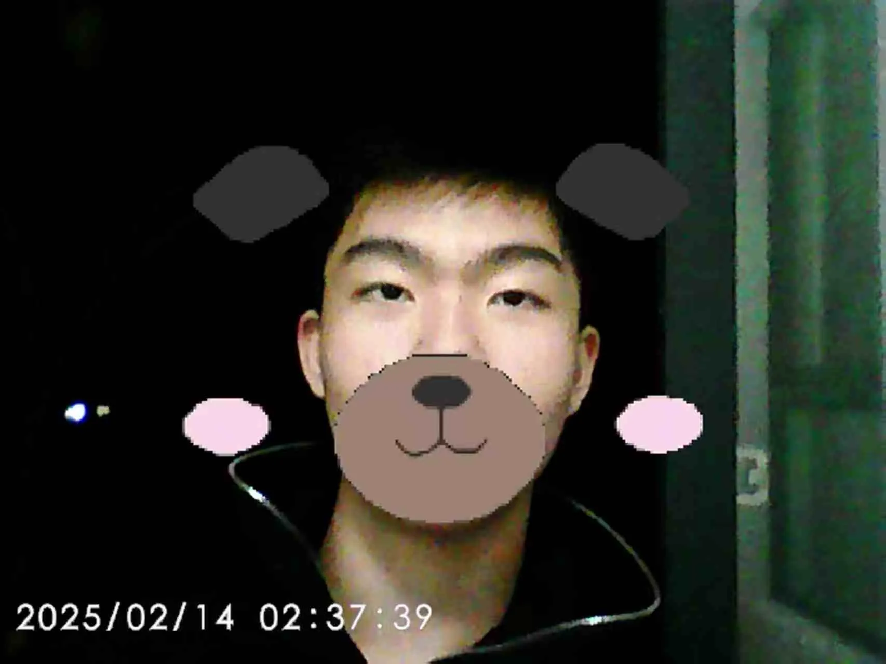
SELFIE 0204 / OFF GUARD
把几张照片放在不同章节里。每翻过一段，再多认识我一点。
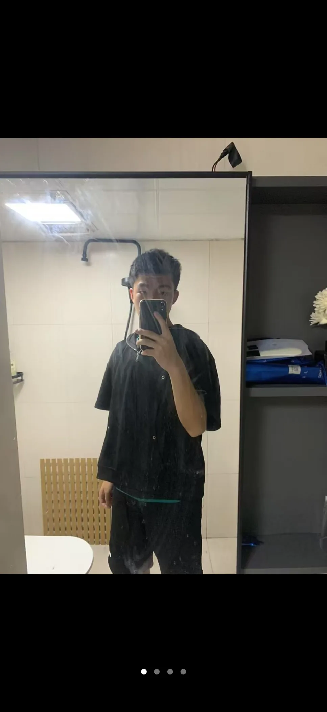
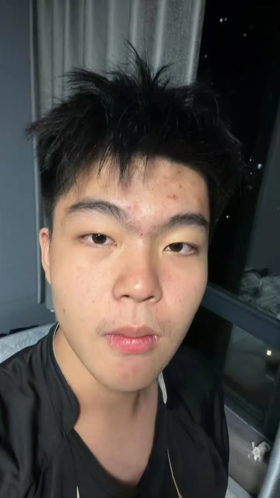
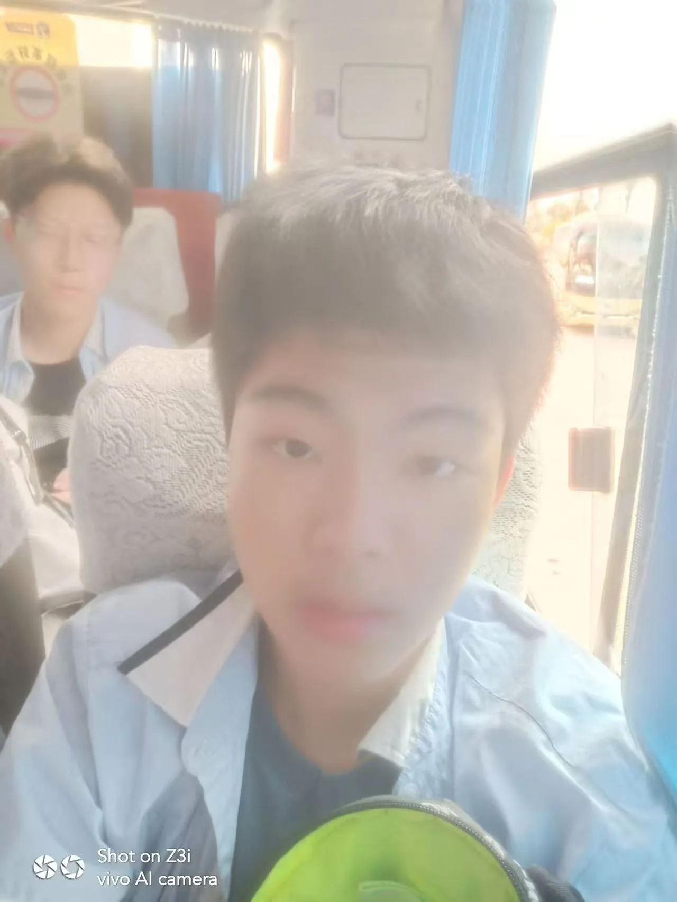
05 / FOUR MODES
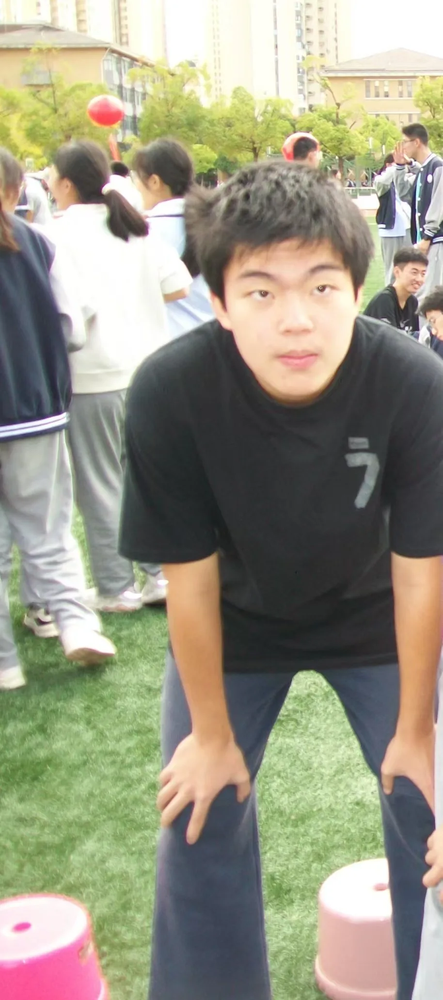
01奔跑、对抗、团队感。喜欢球场上的热血，也喜欢进球之后第一个看向在意的人。
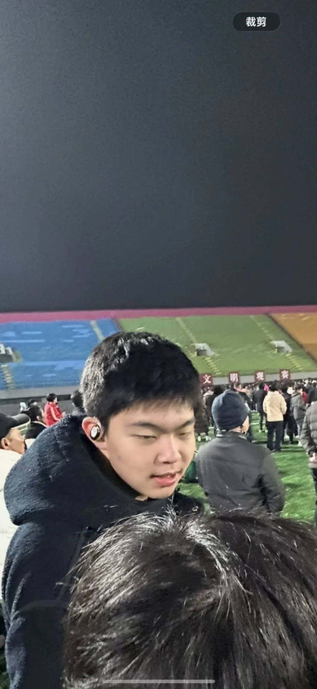
02自律、坚韧、关键时刻站出来。喜欢 C 罗，也想像他一样，对热爱的事情一直全力以赴。
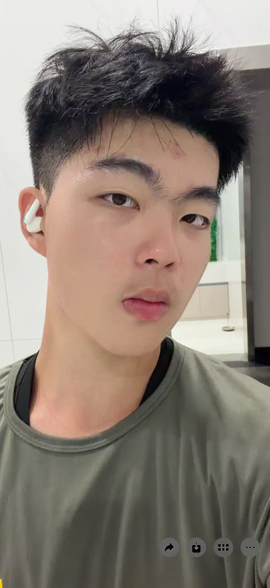
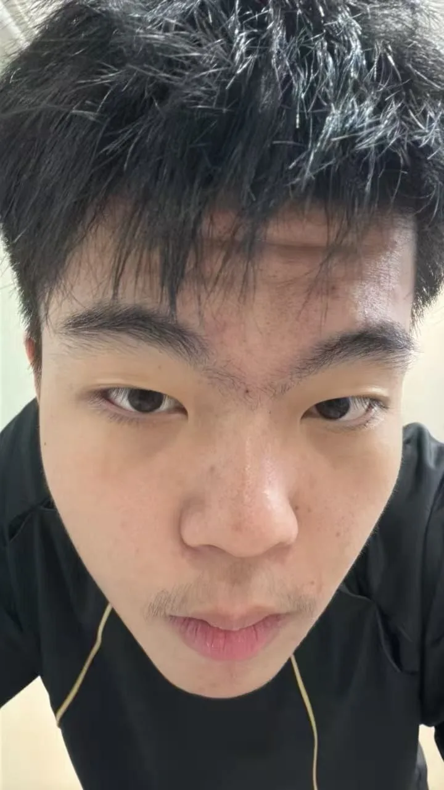
03再糟糕的一天，也会在狗狗摇尾巴的瞬间被治愈。希望你也不排斥毛茸茸的快乐。
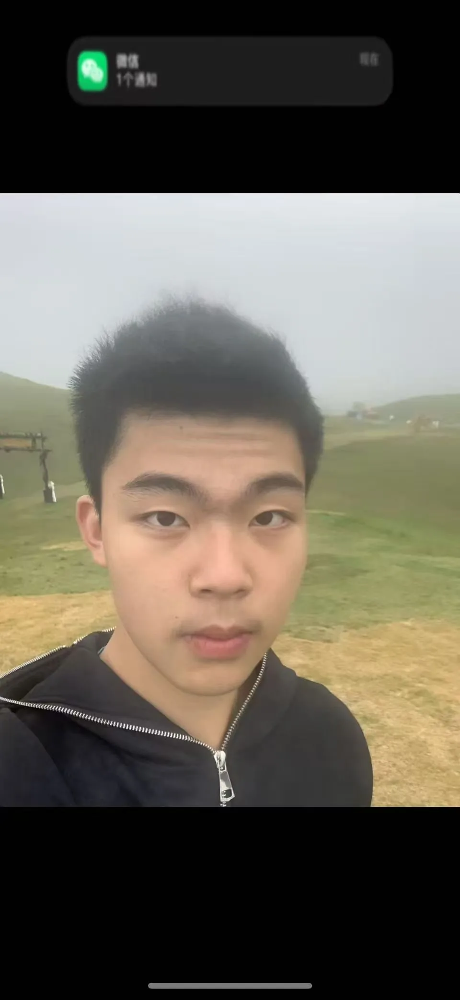
04开心要拍，约会要拍，普通日常也想拍。以后镜头里，希望能多一个你。
06 / SCOUTING REPORT
我不把过去当成谈资，也不会用经历包装自己。那些相遇和告别教会我：喜欢要表达，问题要沟通，承诺要认真，告别也应该体面。
现在的我依然相信爱，也愿意认真认识合适的人。区别是，比从前更清楚自己适合怎样的关系。
“想被认真选择，
也会认真选择你。”
07 / DATING LEAGUE
先从正常聊天开始。不问户口，不查历史，真诚自我介绍最重要。
晋级条件：聊得来看球、吃饭、遛狗、散步，在真实生活里看看彼此相处是否舒服。
晋级条件：相处自然明确表达，认真对待。不是拉扯谁更主动，而是两个人都愿意靠近。
最终奖励：长期陪伴08 / TEN LITTLE THINGS
篮球、足球都可以，最好还能一起为 C 罗喊一次。
看狗狗在前面跑，我们在后面慢慢聊天。
不用每张都好看，真实和开心最重要。
去没去过的地方，也重新认识熟悉的生活。
喜欢的店可以重复去，新店也一起试。
看完还能讨论很久，比电影本身更重要。
用照片和视频，把平凡日子变成连续的青春片。
认真听，也坦诚说，不靠猜来理解彼此。
运动、作息或一个小目标，互相提醒，不互相内耗。
没有固定答案，只要两个人都愿意参与。
可以慢热，但不要欺骗；可以有情绪，但愿意沟通。
喜欢小动物很加分，对球类运动不排斥更加分。
不要求每天都轰轰烈烈，但愿意在普通日子里互相回应。
真诚、情绪稳定、愿意沟通，不冷战、不消失。可以一起运动、遛狗、旅行，也可以安静地待在一起。先从朋友开始，舒服和安心比速度重要。
爱笑 · 大方 · 会打球 · 有狗狗 · 能拍照 · 认真陪伴
09 / LAST FRAMES
10 / FINAL CALL
不用复杂的暗号。备注一句“在网站看到你”，剩下的从正常聊天开始。
不着急，先从聊天和相处开始。